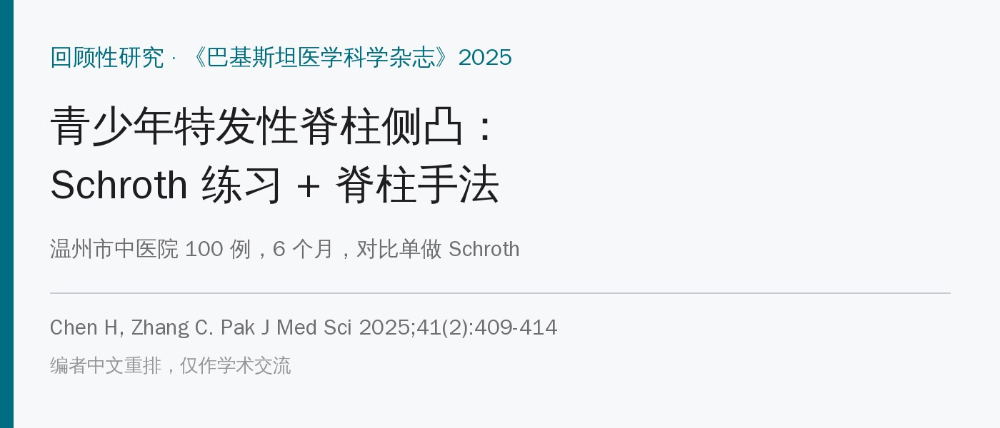
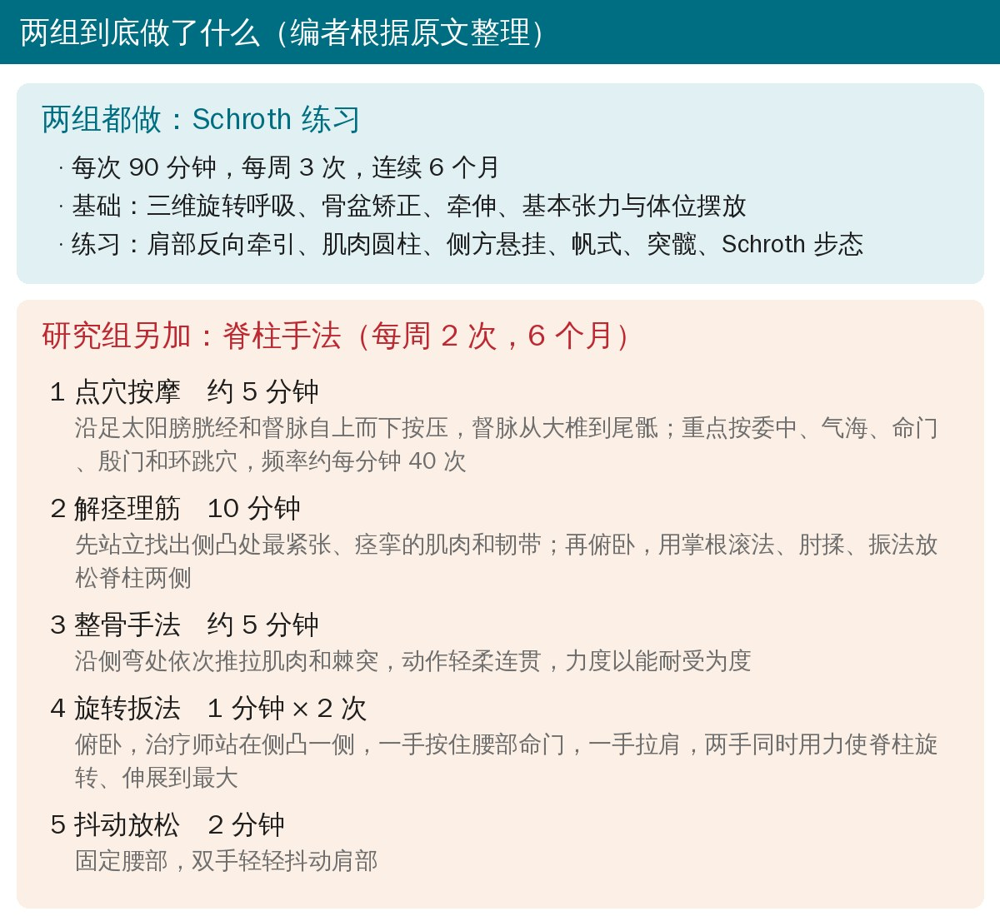
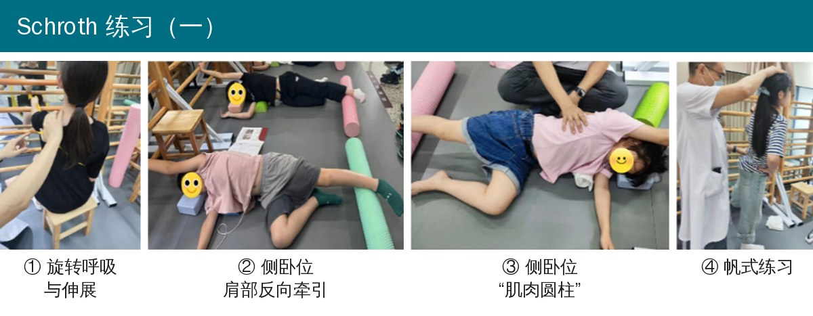
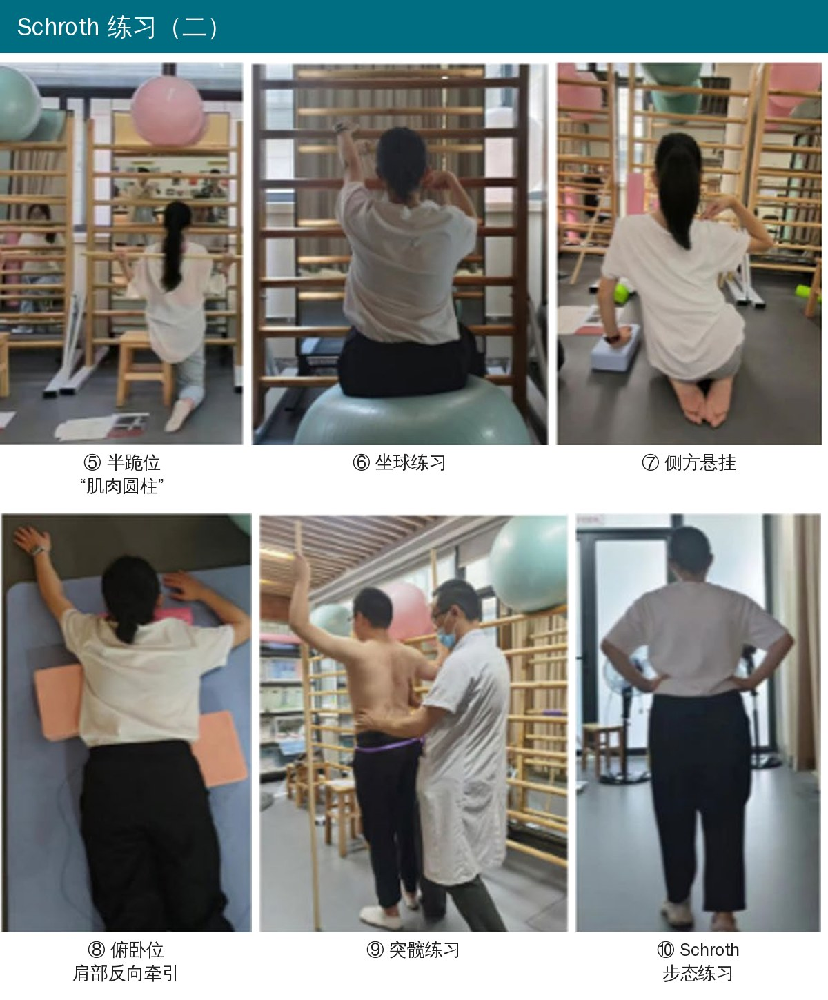
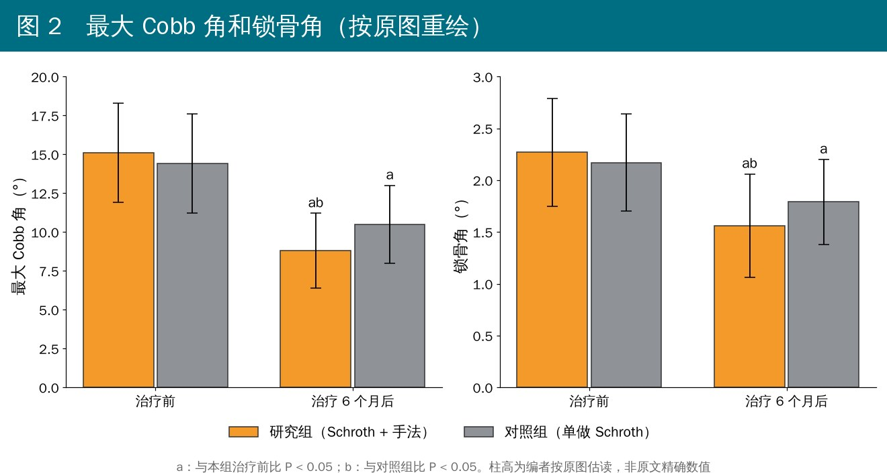
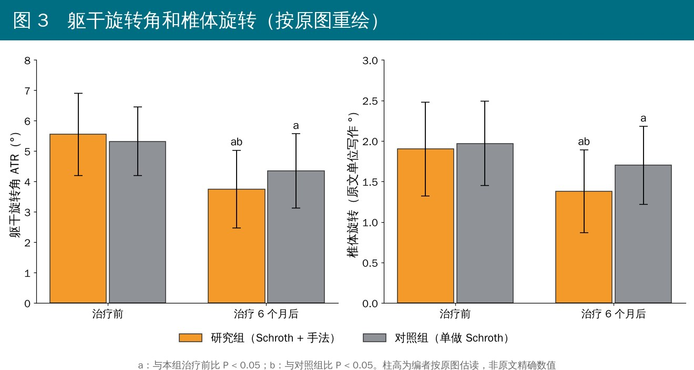
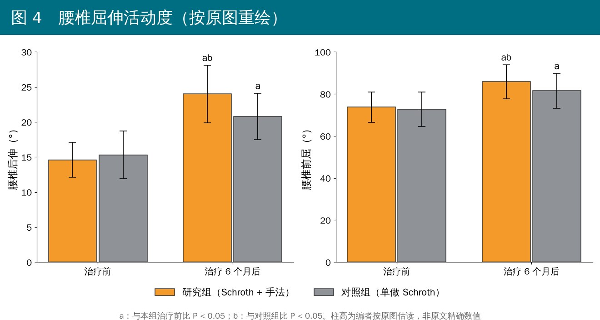

🔖原文信息（编者中文重排）
📚 文献信息
▪ Chen H, Zhang C. The effect of Schroth Therapy combined with spinal manipulation for the treatment of adolescent idiopathic scoliosis. Pak J Med Sci. 2025;41(2):409-414.
▪ 作者来自浙江中医药大学附属温州市中医院（骨科、针灸科）
▪ 单中心回顾性研究（不是随机对照试验）
青少年特发性脊柱侧凸（AIS）占所有脊柱侧凸的 80%～85%，10～18 岁青少年里大约每 25～50 人就有 1 个。度数不大的孩子，保守治疗里最常见的是Schroth 练习：用三维旋转呼吸、体位摆放和针对性的矫正动作，让孩子学会自己把弯“撑回来”。
国内中医院还常给这些孩子做推拿、整骨类的脊柱手法，松解侧凸处紧张的软组织、调整脊柱。两样合起来做，是不是比单做 Schroth 更好？这篇就是翻病历，把“Schroth + 手法”和“单做 Schroth”的孩子各挑 50 个来比。
• 2023 年 1 月到 2024 年 2 月，温州市中医院 150 名接受 Schroth 治疗（加或不加手法）的 AIS 孩子
• 纳入：全脊柱 X 线确诊，10～13 岁，Cobb 角 10°～20°（轻度），资料完整
• 排除：染色体异常、周围神经或肌肉病变、蝴蝶椎/半椎体/脊髓空洞、生长发育障碍、明显足和下肢畸形、非特发性侧凸
• 按性别配对后，研究组（Schroth + 手法）和对照组（单做 Schroth）各 50 人
• 治疗前和治疗 6 个月后各评估一次

🔖两组方案一览（编者根据原文整理）
第一次课先学 Schroth 的基本原则：三维旋转呼吸、骨盆矫正、牵伸、基本张力和体位摆放；同一节课里接着练肩部反向牵引、肌肉圆柱、侧方悬挂、帆式、突髋和 Schroth 步态。每次 90 分钟，每周 3 次，连续 6 个月。原文图 1 给了十个练习的照片：

🔖原文图 1（上排）：① 旋转呼吸与伸展；② 侧卧位肩部反向牵引；③ 侧卧位“肌肉圆柱”；④ 帆式练习（编者裁切重排，字母标注改为中文）

🔖原文图 1（下排）：⑤ 半跪位“肌肉圆柱”；⑥ 坐球练习；⑦ 侧方悬挂；⑧ 俯卧位肩部反向牵引；⑨ 突髋练习；⑩ Schroth 步态练习
几个练习的意思简单说一下：“肌肉圆柱”是侧卧或半跪时把躯干绷成一根“圆柱”，抵抗重力不塌；肩部反向牵引是把凸侧肩和凹侧骨盆往相反方向拉长；突髋练习针对腰段侧弯时骨盆往一侧突出的问题；Schroth 步态是把矫正后的姿势带到走路里。所有动作都配合往凹侧“吸气撑开”的旋转呼吸。
• ① 点穴按摩（约 5 分钟）：沿足太阳膀胱经和督脉自上而下按压，督脉从大椎一直到尾骶；重点按委中、气海、命门、殷门、环跳，约每分钟 40 次
• ② 解痉理筋（10 分钟）：先让孩子站着，找出侧凸处最紧张、痉挛的肌肉和韧带；再俯卧，用掌根滚法、肘揉、振法松解脊柱两侧
• ③ 整骨手法（约 5 分钟）：在侧弯处依次推、拉肌肉和棘突，动作轻柔连贯，力度以孩子能忍受为准
• ④ 旋转扳法（1 分钟 × 2 次）：孩子俯卧放松，治疗师站在侧凸一侧，一手按住腰部命门，一手拉肩，两手同时用力，把脊柱旋转、伸展到最大
• ⑤ 抖动放松（2 分钟）：固定腰部，双手轻轻抖动肩部
算下来，研究组每周比对照组多了 2 次、每次 20 多分钟的一对一手法。这一点后面讲可信度时还会提到。
• 疗效分级（看全脊柱 X 线上的 Cobb 角）：显效 = Cobb 角 ≤ 10° 或减少 ≥ 5°；有效 = 减少 ≤ 5°；无效 = 不变或加重。显效 + 有效 = 总有效率
• 最大 Cobb 角和锁骨角（两侧锁骨最高点连线与水平线的夹角，反映肩是否平）
• 躯干旋转角（ATR）：用脊柱侧弯测量尺（Scoliometer）在前屈位测
• 椎体旋转：Nash-Moe 法
• 腰椎前屈、后伸活动度：用量角器测
• 基线：两组性别、年龄、体重、身高、侧弯部位、Risser 征都没有统计学差异
• 总有效率：研究组 96%，对照组 84%（P = 0.046）
• 治疗 6 个月后，两组的最大 Cobb 角、锁骨角、ATR 和椎体旋转都比治疗前小，研究组更小
• 两组腰椎前屈、后伸都比治疗前大，研究组更大

🔖原文图 2 重绘：最大 Cobb 角和锁骨角。研究组从约 15° 降到约 9°，对照组从约 14° 降到约 10.5°（数值为编者按原图估读）

🔖原文图 3 重绘：躯干旋转角（ATR）和椎体旋转

🔖原文图 4 重绘：腰椎后伸和前屈活动度
注意：原文只给了柱状图，没有给出任何具体的均值、标准差和 P 值，上面三张图里的数字是编者按原图估读的，两组之间的差距大概是 Cobb 角 1.5°～2°、ATR 0.6° 左右。
• 回顾性、非随机：哪些孩子加手法是临床上定的，可能本身就有差别（比如家长依从性更好、更愿意来医院）。原文自己也承认样本小、没做样本量计算
• 剂量不对等：研究组每周多 2 次一对一治疗，多出来的接触时间、关注度和期望效应都可能让结果更好看，没法单独归功于“手法”
• 差距在测量误差以内：Cobb 角的测量误差一般就有 3°～5°，两组治疗后差不到 2°，ATR 差 0.6° 左右，临床上很难说有实际意义
• 疗效标准很宽松：入组 Cobb 角本来就是 10°～20°，“减少 ≤ 5°”就算“有效”，量出来少 1°～2° 也算，所以两组总有效率都很高
• 没盲法：没说谁量的 X 线和 ATR，评估者知不知道分组
• 只随访 6 个月：AIS 要一直管到骨骼成熟，6 个月的变化说明不了能否阻止进展
• 人群窄：只有 10～13 岁、轻度（10°～20°）的孩子，中重度、需要支具的情况不能套用
• “按性别配对”但性别并不平衡：方法里说按性别配对后各取 50 人，表 1 里却是研究组男/女 21/29、对照组 27/23
• 年龄中位数落在四分位数范围外：对照组年龄写成“11（12～13）”岁，中位数 11 不可能比下四分位数 12 还小
• 百分比算错：表 1 研究组“胸腰段 24 例（45.00%）”，24/50 应为 48%
• Risser 征的卡方值复核不上：按表 1 的人数算，χ² ≈ 0.70、P ≈ 0.87，原文写的是 1.347 和 0.718（结论不变，但数字对不上）；另外 Risser 征是分级，原文写成了“0°、I°…”
• 总有效率的 P 值卡在边上：96% vs 84% 用普通卡方确实是 χ² = 4.000、P = 0.046，但对照组“无效”的期望频数刚好只有 5，用连续性校正后 P ≈ 0.096，Fisher 确切检验 P ≈ 0.092，都不显著
• 疗效标准互相重叠：“显效”包括“减少 ≥ 5°”，“有效”是“减少 ≤ 5°”，正好减少 5° 两边都能归；“减少 ≤ 5°”字面上也包括 0°，又和“无效 = 不变”冲突
• 椎体旋转的单位：Nash-Moe 法是按椎弓根位置分 0～4 级的分级方法，不是测角度，原文图 3 却用“°”标注，数值也只有 1～2
• 结果只有图、没有数：Cobb 角、ATR、活动度等主要结果都没给均值、标准差、t 值和 P 值，没法复核
• 体位描述前后矛盾：解痉时已经让孩子俯卧，整骨后又写“扶孩子转成俯卧位”；另外气海穴在下腹部，和俯卧位、沿背部经络按压的描述也不太对得上
• 图 1⑦ 标的是“侧方悬挂”，照片里却是孩子跪坐、手搭在肩上，看不出“悬挂”
• 讨论引用对不上：讨论说 Stępnik 等的研究是在“呼吸系统疾病患者”身上做手法，但该参考文献的标题写的是在健康人身上做的
• Schroth 本身是主角：两组都做了 6 个月、每周 3 次、每次 90 分钟的 Schroth，两组 Cobb 角都降了 4°～6°，这个量和以往 Schroth 研究差不多
• 手法可以作为辅助，用来松解侧凸处紧张、疼痛的软组织，让孩子更舒服地练；但单靠这篇，说不出手法能额外“矫正”多少度
• 给孩子做旋转扳法要格外小心：这篇没报告任何不良事件，也没写排除标准里是否筛查过手法禁忌
• 轻度 AIS 的核心仍然是：规律的特异性练习 + 按时复查 X 线 + 达到支具指征时及时上支具
表 1 两组基线资料比较
| 项目 | 研究组（n = 50） | 对照组（n = 50） | t / χ² | P |
|---|---|---|---|---|
| 男/女 | 21/29 | 27/23 | 1.442 | 0.230 |
| 年龄（岁） | 12（12～13） | 11（12～13） | −1.255 | 0.210 |
| 体重（kg） | 37.92 ± 10.77 | 35.86 ± 11.69 | 0.916 | 0.362 |
| 身高（cm） | 147.74 ± 9.62 | 146.92 ± 13.08 | 0.357 | 0.722 |
| 侧弯部位 [n（%）] | 1.990 | 0.370 | ||
| 胸段 | 17（34.00） | 14（28.00） | ||
| 胸腰段 | 24（45.00） | 21（42.00） | ||
| 下腰段 | 9（18.00） | 15（30.00） | ||
| Risser 征 [n（%）] | 1.347 | 0.718 | ||
| 0 级 | 4（8.00） | 6（12.00） | ||
| Ⅰ 级 | 13（26.00） | 13（26.00） | ||
| Ⅱ 级 | 18（36.00） | 15（30.00） | ||
| Ⅲ 级 | 15（30.00） | 16（32.00） |
年龄为中位数（四分位数范围），其余计量资料为均值 ± 标准差。表中数字照原文录入，原文的错误见上文。
表 2 两组疗效比较 [n（%）]
| 组别 | n | 显效 | 有效 | 无效 | 总有效 |
|---|---|---|---|---|---|
| 研究组 | 50 | 29（58.00） | 19（38.00） | 2（4.00） | 48（96.00） |
| 对照组 | 50 | 22（44.00） | 20（40.00） | 8（16.00） | 42（84.00） |
总有效率比较：χ² = 4.000，P = 0.046。
欢迎关注悦美力公众号，获取更多物理治疗的专业知识！
📄参考文献：
Chen H, Zhang C. The effect of Schroth Therapy combined with spinal manipulation for the treatment of adolescent idiopathic scoliosis. Pak J Med Sci. 2025;41(2):409-414. doi:10.12669/pjms.41.2.11355
原文以 CC BY 3.0 协议开放获取。本文为学术交流用的中文解读，图 1 引自原文（编者裁切重排、标注改为中文），图 2～4 为编者按原文柱状图估读重绘，方案卡为编者整理绘制，附录表格为编者翻译整理。